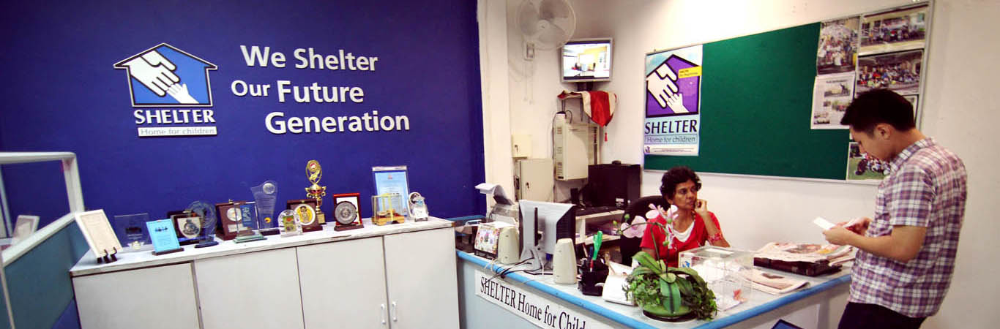
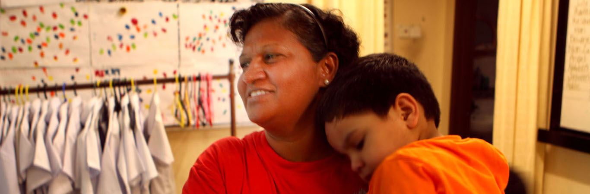
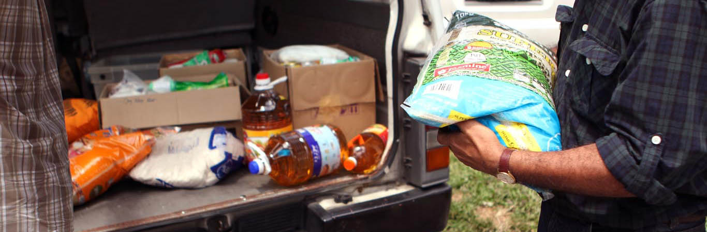

EMPLOYMENT AT SHELTER
Many of us have seen these: Faces of poor stricken children, faces of helpless children lashed by the unthinkable hurt upon them and faces of children with silent tears streaming down from the hurt of deep emotional trauma. We can feel our hearts trembling within, shaken by the shock of witnessing these acts. In response, we either cry for judgement to be meted out against the perpetrators or we ask ourselves “What can we do to help these children?”
If you really feel the burden to restore and impact these children’s lives, this is our call to you, Join us.
Passionate, humble, committed and a heart for the underprivileged children. These are the attributes we are looking for in a person to be part of our team with a vision in sheltering our future generation.
You might not be highly qualified but we are more than willing to train and guide you. The following are areas where you can contribute your talents and efforts for the children at SHELTER.
SHELTER HQ
The SHELTER HQ is both the face and the backbone of the organization. Most of the administrative, management, PR and planning work are done here. Therefore, individuals who wish to apply here must be innovative, vibrant, resourceful and possess the necessary computer skills and knowledge of Word, Excel and Powerpoint among others. Knowledge of Adobe Illustrator would be an added advantage. From simple tasks of helping to carry things to helping to brain storm ideas for projects, we also hope that applicants are versatile and participative in any aspect that requires your help. Depending on the job position you apply, you may also need certain experience or knowledge of the area applied.
The range of Job positions in the HQ may be varied, for example:
Administrator, Public Relations Executive, Community Services Executive, Receptionist, Accountant, HR and Managerial roles.
SHELTER HOME STAFF
The Homes of SHELTER are the places where our children call their Safe Haven and their home. The difference between a house and a home is that the house is just a concrete place to live in and a home is where one feels belong to.
The Home Staff will be the individuals who will turn our houses as the children’s Home.
We are looking for applicants who are prepared to commit for long term to be with the children. They should have the desire to spend quality time with the children and to guide them with love, patience and kindness.
As the Home Staff holds a vital position in dealing with the children directly, all applicants should preferably have a minimum of 1 – 2 years of experience in social work with children and teenagers.
We are also looking for trained and qualified counsellors to help our children deal with their past and to be restored gradually over the years.
The range of Job positions in our Homes may be varied, for example:
Counsellor, Caregiver, Driver, Cook, Administrator, Assistant Manager and Home Manager.
COMMUNITY SERVICE
The Community Service team aims at helping the underprivileged children at the poor communities without separating the children from their family. The idea behind this help is not just merely providing food and financial aid but to create an environment where the children in these communities can have the opportunity to grow up holistically.
The officers in this job will then assess each family’s condition and evaluate what would be the best measure of help to be given to create that environment for the children in those families.
The help can range from counseling, food aid, micro finance aid, tuition, legal issues as well as coordinating with other volunteers to come in and to help in other different ways.
Applicants should have administrative and people’s skills as well as the genuine desire to uplift the poor in order to be effective in this job.
The range of Job positions that exist in the Community service are:
Community Officer and Refugee Officer
Contact us:

ShelterHomeMY

(+603)-7955 0663

No. 9, 1st Floor Jalan Barat 46200 Petaling Jaya Selangor, Malaysia
This website is not an official website of SHELTER - Home for Children.
This website was developed for the purpose of learning HTML & CSS only.
Design by Mierzad, Hisyam, Zaim, Valerie
Check their official website here!Last updated 13th January 2021.